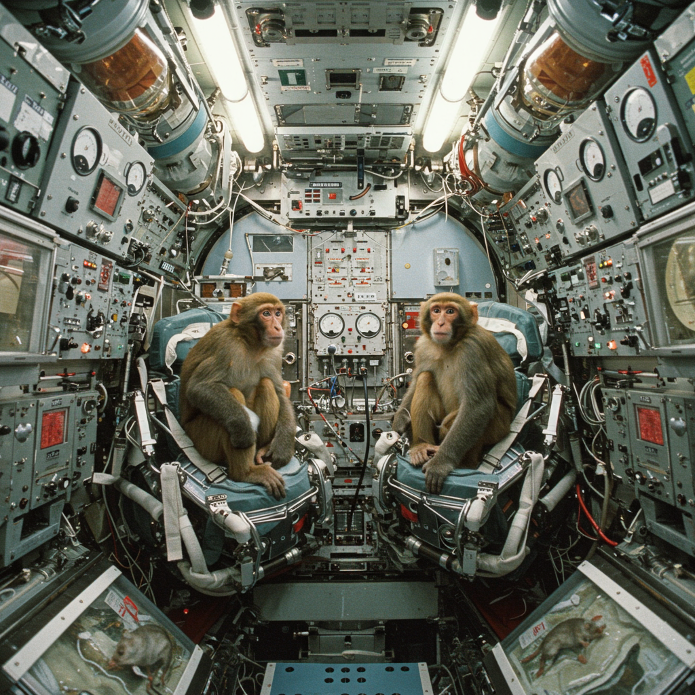
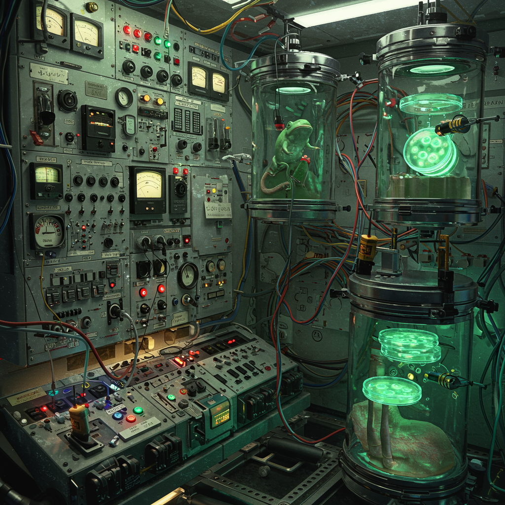

Kosmos 1514

Datos Técnicos
- Nombre: Kosmos 1514
- Fecha de lanzamiento: 7 de diciembre de 1983
- Vehículo de lanzamiento: Soyuz-U
- Tipo de satélite: Bion 6 (biológico)
- Duración de la misión: 5 días
- Órbitas completadas: 81
- Recuperación: Éxito total, cápsula recuperada con especímenes vivos
Objetivo de la Misión
Kosmos 1514, también conocido como Bion 6, fue parte del programa soviético de vuelos biológicos. Su objetivo fue estudiar los efectos de la microgravedad en organismos complejos, como mamíferos y humanos simulados, para la preparación de misiones espaciales prolongadas.
Carga Científica
- Ratas albinas (biomarcadores)
- Monos rhesus con sensores fisiológicos
- Ranas, insectos y cultivos celulares
- Simulaciones de tejidos humanos en microgravedad
Impacto Histórico
Kosmos 1514 representó una evolución clave del programa Bion. Introdujo equipamiento médico más avanzado, permitió experimentación neurofisiológica remota y sentó las bases para futuras colaboraciones científicas con instituciones de occidente. Sus resultados fueron cruciales para el entendimiento de la degeneración muscular y ósea en entornos sin gravedad.
← Regresar al Archivo X